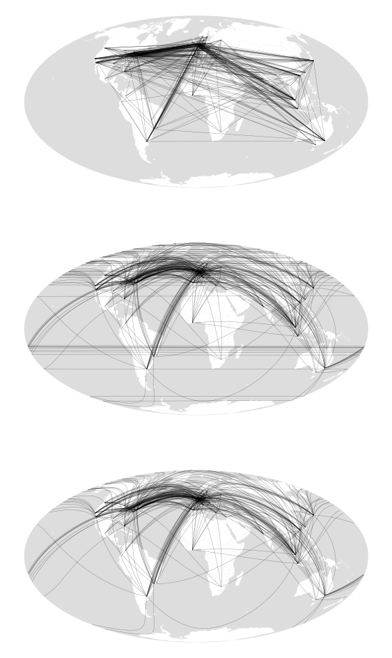
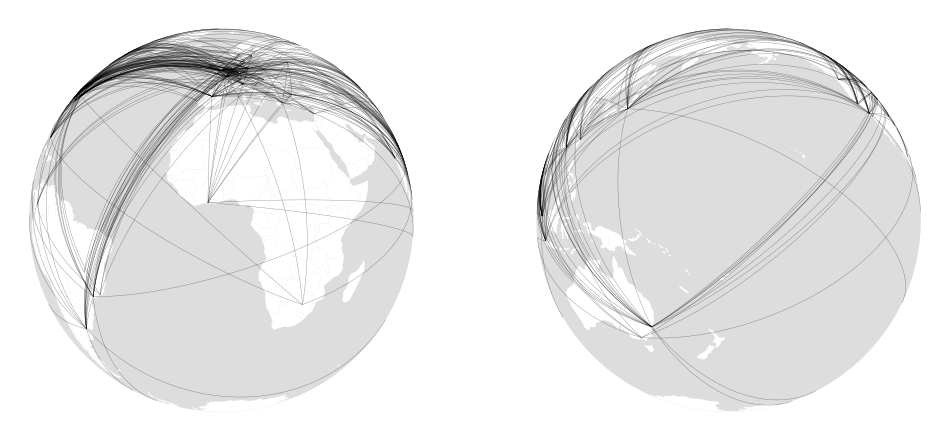

import pandas as pd
import numpy as np
import networkx as nx
import geopandas as gpd
import shapely.geometry as geom
%matplotlib inline
import matplotlib.pyplot as pyplotRead world city network data
This is dataset 11 from the site linked here.
wcn = pd.read_csv('da11-1.csv', index_col=0)
wcn.head(5)| Ernst & Young | Arthur Andersen | MSI | IGAF | AGN | BDO | Grant Thornton | Horwath | KPMG | Summit & Baker | ... | Mercer | Boston | Deloitte | BoozeA&M | A.T. Kearney | McKinsey | Bain | Compass | Andersen Consulting | Gemini | |
|---|---|---|---|---|---|---|---|---|---|---|---|---|---|---|---|---|---|---|---|---|---|
| name | |||||||||||||||||||||
| ABERDEEN | 2 | 0 | 0 | 0 | 0 | 0 | 0 | 2 | 2 | 0 | ... | 0 | 0 | 0 | 0 | 0 | 0 | 0 | 0 | 0 | 0 |
| ABIJAN | 3 | 0 | 0 | 0 | 0 | 0 | 0 | 0 | 2 | 0 | ... | 0 | 0 | 2 | 0 | 0 | 0 | 0 | 0 | 0 | 0 |
| ABU DHABI | 2 | 2 | 0 | 0 | 2 | 0 | 0 | 2 | 2 | 0 | ... | 0 | 0 | 2 | 2 | 0 | 0 | 0 | 0 | 2 | 0 |
| ACCRA | 0 | 0 | 0 | 0 | 0 | 0 | 2 | 0 | 2 | 0 | ... | 0 | 0 | 2 | 0 | 0 | 0 | 0 | 0 | 0 | 0 |
| ADDIS ABABA | 0 | 0 | 0 | 0 | 0 | 0 | 0 | 0 | 0 | 0 | ... | 0 | 0 | 0 | 0 | 0 | 0 | 0 | 0 | 0 | 0 |
5 rows × 100 columns
Make the data into a network
def cut_table_at(table, x):
tbl = table.copy()
tbl[tbl[:] < x] = 0
tbl[tbl[:] > 0] = 1
return tbl[list(tbl.sum(axis=1) > 0)]
def make_network_from_incidence_table(tbl):
incidence_matrix = np.array(tbl)
adj_matrix = incidence_matrix.dot(incidence_matrix.transpose())
np.fill_diagonal(adj_matrix, 0)
G = nx.Graph(adj_matrix)
return nx.relabel_nodes(G, dict(zip(G.nodes(), list(tbl.index))))
Gnx = make_network_from_incidence_table(cut_table_at(wcn, 4))Here we add geodetic coordinates to the nodes.
wcn_ll = pd.read_csv('wcn-cities-ll.csv', index_col=0)
for name in Gnx.nodes():
lon = wcn_ll.loc[name]['LONGITUDE']
lat = wcn_ll.loc[name]['LATITUDE']
Gnx.nodes[name]['lat'] = lat
Gnx.nodes[name]['lon'] = lon
# nx.readwrite.gml.write_gml(Gnx, 'wcn.gml')
# nx.graphml.write_graphml(Gnx, 'wcn.graphml')Code to geographically project the network
Particularly to show edges as geodesics (i.e. great circle paths)
import math
R = 6378.137 #km
# Forward projection is distance and (initial) bearing
# from lon0, lat0 to lon1, lat 1
# Use the Haversine formulae, see
# https://en.wikipedia.org/wiki/Haversine_formula
def get_distance(lon0, lat0, lon1, lat1):
lon0 = math.radians(lon0)
lon1 = math.radians(lon1)
lat0 = math.radians(lat0)
lat1 = math.radians(lat1)
dlon = lon1 - lon0
dlat = lat1 - lat0
a = math.sin(dlat / 2) * math.sin(dlat / 2) + \
math.cos(lat0) * math.cos(lat1) * \
math.sin(dlon / 2) * math.sin(dlon / 2)
c = 2 * math.atan2(math.sqrt(a), math.sqrt(1 - a))
b = math.atan2(math.sin(dlon) * math.cos(lat1), math.cos(lat0) *
math.sin(lat1) - math.sin(lat0) * math.cos(lat1) *
math.cos(dlon))
return R * cdef get_omerc_projstring(lon1, lat1, lon2, lat2):
return \
f"+proj=omerc +lat_1={lat1} +lon_1={lon1} +lat_2={lat2} +lon_2={lon2}"Make a dateline cut
dateline = geom.LineString([(180, y) for y in range(-90, 91, 1)])
def split_at_dateline(points): #, split=antimeridian):
# make points into a series of LineStrings
linestrings = [geom.LineString([p1, p2])
for p1, p2 in zip(points[:-1], points[1:])]
lengths = [ls.length for ls in linestrings]
intersections = [l > 270 for l in lengths]
if True in intersections:
idx = intersections.index(True)
coords1 = points[:idx]
coords2 = points[idx+1:]
if len(coords1) > 1 and len(coords2) > 1:
return geom.MultiLineString([coords1, coords2])
elif len(coords1) == 1 and len(coords2) == 1:
return geom.MultiPoint(points)
else:
if len(coords1) > len(coords2):
return geom.LineString(coords1)
else:
return geom.LineString(coords2)
else:
return geom.LineString(points)Code to make dense geodesics
geodesics = [] # list of lon-lat pairs as LineStrings
dense_geodesics = [] # list of LineStrings along the geodesic
cut_geodesics = [] # list of the geodesics cut at the dateline# the steps along the geodesic
step_length = 100 # km
# iterate over the edges
for e in Gnx.edges():
p1 = geom.Point(Gnx.nodes[e[0]]['lon'], Gnx.nodes[e[0]]['lat'])
p2 = geom.Point(Gnx.nodes[e[1]]['lon'], Gnx.nodes[e[1]]['lat'])
geodesics.append(geom.LineString([p1, p2]))
dist = get_distance(p1.x, p1.y, p2.x, p2.y)
# determine the number of steps
n_steps = math.ceil(dist / step_length)
# make a geodataframe of the geodesic
gdf = gpd.GeoDataFrame(geometry = [p1, p2])
gdf.crs = "+proj=longlat"
# project it oblique mercator with the geodesic as the central meridian
projstring = get_omerc_projstring(p1.x, p1.y, p2.x, p2.y)
gdf = gdf.to_crs(projstring)
# retrieve the points in the projected space
p1 = gdf.loc[0]['geometry']
p2 = gdf.loc[1]['geometry']
# now step along them
x_step = (p2.x - p1.x) / n_steps
y_step = (p2.y - p1.y) / n_steps
dense_geodesic = geom.LineString([
(p1.x + x_step * i, p1.y + y_step * i) for i in range(n_steps + 1)])
# make up the new geodataframe and project it back to 4326
gdf = gpd.GeoDataFrame(geometry=gpd.GeoSeries(dense_geodesic))
gdf.crs = projstring
gdf = gdf.to_crs("+proj=longlat")
# append the dense geodesic (uncut and cut) to the lists
dense_geodesic = gdf.geometry[0].coords
dense_geodesics.append(geom.LineString(dense_geodesic))
cut_geodesic = split_at_dateline(dense_geodesic)
cut_geodesics.append(cut_geodesic)# Make up GDFs
geodesics_gdf = gpd.GeoDataFrame(
geometry = gpd.GeoSeries(geodesics))
geodesics_gdf.crs = "+proj=longlat"
geodesics_dense_gdf = gpd.GeoDataFrame(
geometry = gpd.GeoSeries(dense_geodesics))
geodesics_dense_gdf.crs = "+proj=longlat"
geodesics_cut_gdf = gpd.GeoDataFrame(
geometry = gpd.GeoSeries(cut_geodesics))
geodesics_cut_gdf.crs = "+proj=longlat"Mollweide fail maps
moll = '+proj=moll'
globe = geom.Polygon(geom.LineString(
[geom.Point(-180, y) for y in [_ / 10 for _ in range(-900, 901)]] + \
[geom.Point( 180, y) for y in [_ / 10 for _ in range(900, -901, -1)]]))
globe_gdf = gpd.GeoDataFrame(geometry = gpd.GeoSeries([globe]))
globe_gdf.crs = "+proj=longlat"
globe_m = globe_gdf.to_crs(moll)
countries = gpd.read_file("ne-world.gpkg")countries_m = countries.to_crs(moll)
geodesics_m1 = geodesics_gdf.to_crs(moll)
geodesics_m2 = geodesics_dense_gdf.to_crs(moll)
geodesics_m3 = geodesics_cut_gdf.to_crs(moll)
fig = pyplot.figure(figsize=(8, 12))
ax = fig.add_subplot(311)
globe_m.plot(ax=ax, fc = '#dddddd')
countries_m.plot(ax = ax, fc = 'w', linewidth = 0)
geodesics_m1.plot(ax = ax, color = 'k', alpha = 0.5, linewidth = 0.25)
pyplot.axis("off")
ax = fig.add_subplot(312)
globe_m.plot(ax = ax, fc = '#dddddd')
countries_m.plot(ax = ax, fc = 'w', linewidth = 0)
geodesics_m2.plot(ax = ax, color = 'k', alpha = 0.5, linewidth = 0.25)
pyplot.axis("off")
ax = fig.add_subplot(313)
globe_m.plot(ax = ax, fc = '#dddddd')
countries_m.plot(ax = ax, fc = 'w', linewidth = 0)
geodesics_m3.plot(ax = ax, color = 'k', alpha = 0.5, linewidth = 0.25)
pyplot.axis("off")(-19844105.265762024,
19844105.265762024,
-9922052.632687533,
9922052.632687533)
Orthographic not so fail maps
atlantic = '+proj=ortho +lon_0=0 +lat_0=0'
pacific = '+proj=ortho +lon_0=180 +lat_0=0'
globe_o = globe_gdf.copy()
globe_o.geometry = globe_o.scale(xfact = 0.5)
globe_o = globe_o.to_crs("+proj=ortho")
countries_a = gpd.read_file('front.gpkg').to_crs(atlantic)
countries_p = gpd.read_file('back.gpkg').to_crs(pacific)
geodesics_a = geodesics_dense_gdf.to_crs(atlantic)
geodesics_p = geodesics_dense_gdf.to_crs(pacific)
fig = pyplot.figure(figsize=(12,6))
ax = fig.add_subplot(121)
globe_o.plot(ax = ax, fc = '#dddddd')
countries_a.plot(ax = ax, fc = 'w', linewidth = 0)
geodesics_a.plot(ax = ax, color = 'k', alpha = 0.5, linewidth = 0.25)
pyplot.axis("off")
ax = fig.add_subplot(122)
globe_o.plot(ax = ax, fc = '#dddddd')
countries_p.plot(ax = ax, fc = 'w', linewidth = 0)
geodesics_p.plot(ax = ax, color = 'k', alpha = 0.5, linewidth = 0.25)
pyplot.axis("off")(-7015950.7, 7015950.7, -6992427.545669697, 6992427.545669697)